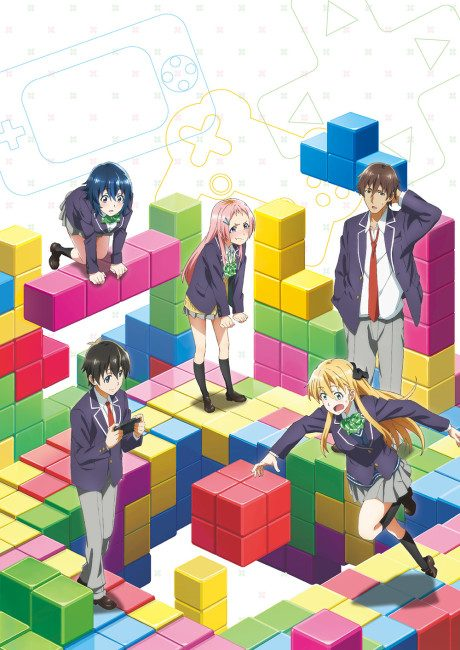

Omoi, Omoware, Furi, Furare
思い、思われ、ふり、ふられ
Four teens become friends, and their love lives become complicated when two of them become step-siblings.
We haven't found where the anime ends in the manga yet.
7.1AniList score
—Animeter, no votes yet
1film
Rate it or report where you stopped
Is it worth watching?
The drop map is for series. Rate the film above to add to its Animeter score.
More like Omoi, Omoware, Furi, Furare
 Manga Ch. 767.9
Manga Ch. 767.9
 Manga Vol. 77.8
Manga Vol. 77.8
 VN7.7
VN7.7
 Manga Ch. 157.5
Manga Ch. 157.5
 Original7.6
Original7.6
 Manga Vol. 57.5
Manga Vol. 57.5
 Manga Ch. 827.4
Manga Ch. 827.4
 Manga Ch. 347.6
Manga Ch. 347.6
 Unclear8.3
Unclear8.3
 Original7.1
Original7.1

Unclear6.5 Manga Ch. 718.3
Manga Ch. 718.3